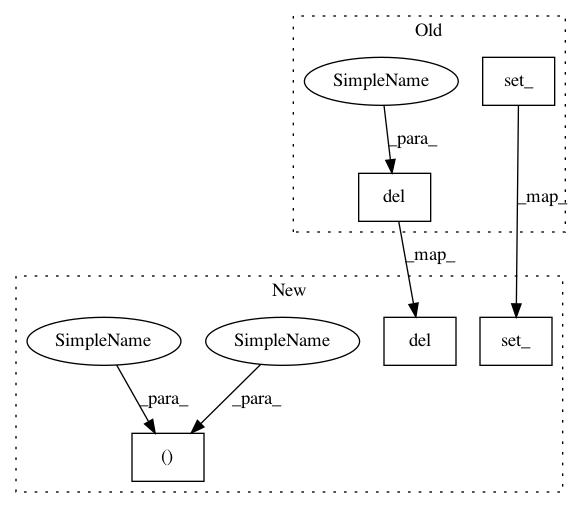

e78b409a087ed1208f07ef05513eeac9b37f042f,memcnn/models/revop.py,ReversibleBlockFunction,forward,#,123
Before Change
del x2
output = torch.cat([y1, y2], dim=1)
y1.set_()
y2.set_()
del y1, y2
// save the (empty) input and (non-empty) output variables
ctx.save_for_backward(x, output)
After Change
with set_grad_enabled(False):
// partition in two equally sized set of channels
y1, y2 = torch.chunk(y, 2, dim=1)
y1, y2 = y1.contiguous(), y2.contiguous()
// compute outputs
with warnings.catch_warnings():
y1var = Variable(y1, requires_grad=False, volatile=True)
gmr = Gm.forward(y1var).data
x2 = y2 - gmr
y2.set_()
del y2
with warnings.catch_warnings():
x2var = Variable(x2, requires_grad=False, volatile=True)
fmr = Fm.forward(x2var).data
x1 = y1 - fmr
y1.set_()
del y1
output = torch.cat([x1, x2], dim=1)
x1.set_()
x2.set_()
del x1, x2
In pattern: SUPERPATTERN
Frequency: 3
Non-data size: 5
Instances
Project Name: silvandeleemput/memcnn
Commit Name: e78b409a087ed1208f07ef05513eeac9b37f042f
Time: 2018-10-14
Author: tychovdo@gmail.com
File Name: memcnn/models/revop.py
Class Name: ReversibleBlockFunction
Method Name: forward
Project Name: silvandeleemput/memcnn
Commit Name: e78b409a087ed1208f07ef05513eeac9b37f042f
Time: 2018-10-14
Author: tychovdo@gmail.com
File Name: memcnn/models/revop.py
Class Name: ReversibleBlockInverseFunction2
Method Name: forward